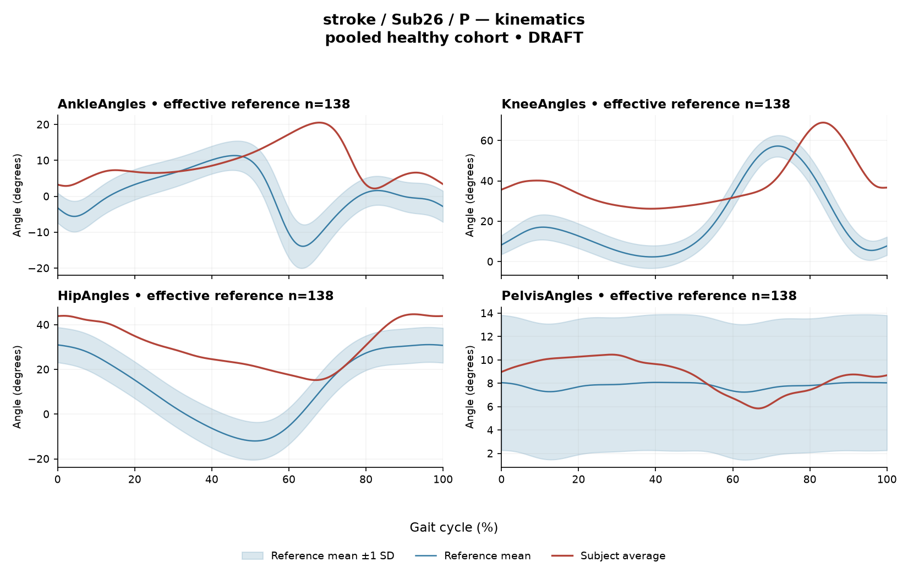

R7B42015DAE198A6D
rater3 / 139 of 150 / Case stroke_Sub26_P / Review row 140
Report: verbatim text
Text file for exact quotations# Gait Report Interpretation — Research Summary **Participant:** Sub26_P · **Group:** stroke · **Analyzed side:** paretic **Interpretation version:** limited-evidence-v3.1-candidate *Scope note: this is a limited-evidence interpretation of a supplied quantitative summary. It is not a diagnosis, not an impairment grading, and contains no treatment selection.* --- ## 1. Objective Findings **Analysis frame.** The released cycle for this paretic limb runs from one initial contact of that limb (0%) to the next initial contact of the same limb (100%); these are two successive occurrences of the same event, not a single instant. No intermediate event — including individual toe-off — and no phase boundary is supplied. All timing below is therefore expressed as a percentage of the analysis cycle. Percentages are not translated into stance, swing, loading response, mid-stance or pre-swing, and no conventional 60/40 split has been assumed. **Supplied spatiotemporal values.** - Gait speed **0.33 m/s**, which falls in the "household ambulator (<0.4 m/s)" band. This label denotes a speed band only; it does not describe measured walking independence, safety, endurance or real-world community mobility, none of which are supplied. - Cadence **87.5 steps/min**. - Step length symmetry index **+16.1%**, computed with the **successive-footfall** definition (each heel's position at its own initial contact). By the stated sign convention, a positive value means the **paretic step is longer** than the non-paretic step. The summary notes that an alternative instantaneous definition exists and yields different values for some subjects; whether that would be the case here is not shown, and the index itself carries no information about mechanism. **Reference used.** The kinematic deviation reference for this subject is a **pooled cohort of 138 healthy subjects** (1001 phase points, source: main_cohort_excel), pooling both body sides and all ages. It is **not age- or speed-matched** to this participant. The healthy reference cohort's self-selected speeds span 0.80–1.79 m/s; at **0.33 m/s this participant is well below that floor, so no speed-matched healthy comparison exists in this dataset**. Any deviation described below therefore conflates the effects of very slow walking with any stroke-related control changes, and these two contributions cannot be separated from the supplied data. Group membership in the stroke cohort likewise does not by itself establish that a given deviation is caused by stroke, and the supplied comparisons cannot establish a disease effect or a clinical diagnosis. The quoted cohort percentiles are **pooled calibration values, not matched leave-one-out limits** for this subject. **Channels and data supplied.** Sagittal-plane kinematics for ankle, knee, hip and pelvis; seven averaged EMG envelopes (GAS, RF, VL, BF, ST, TA, ERS) with detected intervals, coverage, peak normalized amplitude and max |z|; two co-contraction indices. **Not supplied in this input** (must not be read as absent from the source release): individual toe-off and other gait events; matched muscle-specific normal timing references; stride-level variability; raw-signal quality or crosstalk checks; expert plots; age and sex; time post-stroke and stroke clinical scores; and any non-paretic-side kinematic or EMG data for within-subject side comparison. **Not included by design:** coronal- and transverse-plane joint data — all angles and ROM values here are sagittal only. --- ## 2. EMG Envelope and Threshold Findings **Method constraints on all statements in this section.** These are **ensemble-averaged envelopes**. Normalization used a shared maximum across available strides before averaging, with a participant-, side- and muscle-specific denominator; individual strides were not rescaled to their own peaks. Amplitudes are therefore **relative envelope values** — not absolute neural activation, not force, not strength — and muscles cannot be ranked as stronger or weaker from them. An average curve carries no information about stride-to-stride variability, so none of the patterns below can be assumed to recur in every individual stride. Detected intervals are properties of the averaged envelope under the stated rule (>20% of that curve's own peak, minimum retained interval 3% of the cycle by sample count); because the threshold is relative to each curve's own peak, coverage values are **not** comparable across muscles as amplitude statements. "No interval detected" and the complement of a retained interval do **not** establish muscle inactivity or physiological silence, and none of these intervals should be read as physiological onset, offset, contraction duration, or a gait-phase function such as clearance, push-off or weight acceptance. Without matched muscle-specific timing references, no timing here can be called normal, early, delayed or prolonged. | Muscle | Retained interval(s) (% cycle) | Reported coverage | Peak normalized amplitude | Max \|z\| vs pooled reference (location) | |---|---|---|---|---| | GAS | 1%–43%; 51%–78% | 69% | 0.41 | 7.7 above reference mean, at 69% | | RF | 0%–100% (boundary-continuous) | 100% | 0.45 | 6.6 above, at 80% | | VL | 90%–65% (wraps boundary) | 75% | 0.38 | 4.2 above, at 52% | | BF | 86%–71% (wraps boundary) | 87% | 0.46 | 5.3 above, at 60% | | ST | 55%–71%; 88%–42% (second wraps boundary) | 70% | 0.59 | 3.7 above, at 28% | | TA | 73%–42% (wraps boundary) | 72% | 0.46 | 3.5 **below** reference, at 71% | | ERS | 0%–100% (boundary-continuous) | 100% | 0.51 | 4.8 above, at 72% | **Descriptive reading.** - **Boundary continuity.** At the mean-envelope level, VL, BF, ST, TA, RF and ERS were above threshold across the 100%→0% cycle boundary (the cycle-defining initial contact), i.e. their retained intervals wrap rather than terminate there. **GAS** is the one channel whose retained intervals do not include that boundary: its first interval begins at 1%, numerically adjacent to the initial-contact boundary, and its second ends at 78%. - **Two continuous-coverage channels.** RF and ERS are reported with a single interval spanning the full analysis window and 100% coverage. This is consistent with the mean envelope remaining above 20% of its own peak throughout, but 100% is a rounded display value; a brief sub-threshold sample cannot be excluded or confirmed from what is supplied. Note also that an interval endpoint of 0% (or 100%) is the **analysis-window boundary**, not a demonstrated physiological onset. - **Partial-coverage channels.** For GAS (69%), VL (75%), BF (87%), ST (70%) and TA (72%), the portions of the cycle outside the retained intervals did not meet the combined threshold-plus-3%-duration criterion. That is a statement about the detection rule on the mean curve; it does not establish that the envelope was below threshold everywhere in those regions (a sub-3% above-threshold excursion would also be discarded), and it does not establish inactivity. - **Max |z| locations.** Each max |z| is an **extreme-value statistic** — the largest standardized difference from the phase-specific reference mean across 1001 phase points — not a single-observation z-score, not necessarily the location of peak envelope amplitude, and not a gait event. "Above/below reference" is relative to the reference **mean at that phase point**, not relative to a healthy percentile limit. The conventional 2-SD rule does not apply: in this dataset every one of the 109 healthy controls exceeds |z| = 2 on at least one muscle, and the per-muscle healthy 95th percentiles for this statistic run from 3.65 (ERS) to 4.61 (TA), higher still under leave-one-out. Against that stated span: **GAS 7.7, RF 6.6 and BF 5.3 exceed even the highest per-muscle 95th percentile quoted (4.61)**; **ERS 4.8 exceeds the ERS-specific 95th percentile of 3.65**; **TA 3.5 is below the TA-specific 95th percentile of 4.61**; and **VL 4.2 and ST 3.7 fall inside the 3.65–4.61 span**, so no determination is possible for those two muscles without their own per-muscle percentiles, which are not supplied. Exceeding a pooled percentile is a statement about distance from an unmatched empirical reference; given the absence of any speed-matched control, it does not by itself establish abnormal physiology, impaired control or disease. **Co-contraction indices.** CCI here is the Falconer–Winter index over the **full continuous normalized envelopes** for the whole cycle (2 × common area / summed areas). It is a whole-cycle overlap index of envelope shape, **not** simultaneous activation time, not muscular force, and not a phase-specific result; it can be non-zero even where detected bursts do not overlap, because sub-threshold activity contributes to the areas. Values depend on this normalization and envelope pipeline, so thresholds or values from other studies or algorithms do not transfer. - **TA vs GAS = 0.62**, above the upper endpoint of the healthy 2.5th–97.5th interval for this dataset (0.24–0.59) and above the healthy median of 0.39. - **RF vs BF = 0.78**, **within** the healthy interval 0.48–0.83 and above the median of 0.68, positioned closer to the upper endpoint. Being inside that interval (RF–BF) does not establish physiologically normal co-activation or normal muscle function; being outside it (TA–GAS) does not establish pathological co-activation, spasticity, stiffness, impaired motor control or any diagnosis. Both values share the same unmatched, non-speed-matched reference limitation described in Section 1. --- ## 3. Kinematic and Reference Comparisons All values are **sagittal plane only**; no coronal or transverse channel is included, so no statement about frontal- or transverse-plane mechanics is possible here. | Channel (sagittal) | ROM (deg) | Gait Variable Score | |---|---|---| | Ankle | 18.4 | 13.06 | | Knee | 42.7 | 24.14 | | Hip | 29.4 | 20.68 | | Pelvis | 4.6 | 1.61 | **Composite kinematic deviation score (GPS-like) = 17.20.** This is the RMS of the per-joint GVS values across the four supplied sagittal channels — it is **not** the validated 9-variable GPS, and the two are not interchangeable. Relative to the supplied composite reference (median 5.1, 95th percentile 10.7), 17.20 lies above both. Among the per-joint GVS values, the knee (24.14) is the largest contributor, followed by hip (20.68) and ankle (13.06), with pelvis (1.61) the smallest; no per-joint reference values are supplied, so each joint's GVS can be ranked within this subject but not classified against healthy limits. **Interpretive limits.** GVS and the GPS-like composite are **summary magnitude differences** from the stated reference waveforms. Neither localizes the deviation in the cycle, neither indicates the direction of the waveform offset (e.g. more flexed vs more extended), and neither attributes the difference to a specific phase or event. The ROM values are descriptive ranges only; ROM alone does not establish a clinical restriction or contracture in the absence of an appropriate matched comparison, and none of the joint ROM values has a supplied reference. Because the reference is a pooled, unmatched cohort and no control in it walked as slowly as 0.33 m/s, the elevated composite score cannot be partitioned between slow-walking mechanics and stroke-related changes, and it does not establish a clinical severity grade, a disease effect, or a diagnosis. A speed falling inside some overall cohort range would not have demonstrated matched comparability either; here the speed falls outside the range entirely. No statistical significance testing is supplied and none is implied. --- ## 4. Questions for Further Clinical Assessment These are open questions about what the supplied summary cannot resolve. None presupposes that the mechanism or measurement issue named has already been observed. 1. **Gait events.** Can individual toe-off and other event timings be retrieved from the release for this participant? Without them, no interval above can be placed in stance or swing, or linked to a functional task. 2. **Matched reference.** Is a slow-speed (or age-matched) healthy reference, or a leave-one-out normal limit set, obtainable? If not, is the team prepared to report all deviations as differences from an unmatched pooled reference only? 3. **Per-muscle percentiles.** Can the per-muscle healthy 95th percentiles for the max |z| statistic be supplied for GAS, RF, VL, BF and ST, so that VL (4.2) and ST (3.7) can be positioned rather than left indeterminate? 4. **Signal quality.** Have raw-signal quality, crosstalk, electrode placement and baseline checks been performed for this recording? This input contains no such audit, so whether any measurement artifact exists is currently unknown — particularly relevant for the channels with continuous above-threshold coverage (RF, ERS) and the largest max |z| values (GAS, RF). 5. **Stride-level data.** Are individual strides available? The averaged envelopes cannot show whether the wrapping intervals and coverage values reflect a consistent pattern across strides or an average of dissimilar strides. 6. **Contralateral data.** Are non-paretic-side kinematics and EMG available for a within-subject side comparison? Note that the EMG normalization denominator is side-specific in this release, so amplitude values would not be directly comparable between sides. 7. **Step-length definition.** Would the instantaneous definition change the +16.1% symmetry value for this participant, and which definition does the study protocol treat as primary? 8. **Contextual fields.** Are age, sex, time post-stroke and stroke clinical scores present in the release for this subject, and was any orthosis, assistive device or handrail/treadmill support in use during capture? Any of these could bear on how the speed and deviation values are framed. 9. **Sample accounting.** For any pooled EMG analysis using this subject, which denominator applies — the 614 evaluable combinations verified in the local audit, rather than the nominal 700 (86 lacked valid nonzero paired samples)? 10. **Clinical examination.** Would a bedside sagittal ROM, tone and selective-motor-control examination be undertaken to determine whether the measured ankle (18.4°), knee (42.7°) and hip (29.4°) ranges correspond to any passive restriction, which these data cannot address?
Coverage rows
| Excel row | ID | Required content | Components |
|---|---|---|---|
| 797 | R079 | Describe walking speed 0.33 m/s and that it is below the stated 0.80 m/s reference floor; no reference at this speed is supplied. | AND: displayed speed and that it lies below the 0.80 m/s reference floor, so no speed-supported healthy reference exists in this dataset. Optional: cadence, speed-band label (not a functional claim). One sentence may also serve the comparability half of G03. |
| 798 | R080 | Identify knee AND hip as the principal sagittal GVS differences. Exact ordering is optional. Exact GVS values are optional; identify the findings as reference-relative sagittal summary differences. | AND: knee AND hip, no order. Stating which joint is larger is optional; asserting the reverse order is an error. Exact GVS values are optional; no waveform direction, phase or restriction is required. |
| 799 | R081 | Describe GAS envelope above its phase-specific reference mean at approximately 69% of the analysis cycle (displayed max |z| 7.7). Within each route, muscle identity AND mean-relative direction AND approximate cycle location are required. Exact max-|z| repetition is optional. | Required for each route: muscle identity AND direction relative to the phase-specific reference mean AND approximate cycle location. Optional: exact max |z| value, comparison with the supplied endpoint span (descriptive only). Prohibited: percentile classification, gait phase, physiological onset, severity. |
| 800 | R082 | Describe RF envelope above its phase-specific reference mean at approximately 80% of the analysis cycle (displayed max |z| 6.6). Within each route, muscle identity AND mean-relative direction AND approximate cycle location are required. Exact max-|z| repetition is optional. | Required for each route: muscle identity AND direction relative to the phase-specific reference mean AND approximate cycle location. Optional: exact max |z| value, comparison with the supplied endpoint span (descriptive only). Prohibited: percentile classification, gait phase, physiological onset, severity. |
| 801 | R084 | Describe the supplied successive-footfall step-length index 16.1% and its meaning: the paretic step is longer. | AND: displayed index and the direction supported by its sign. Optional: formula, definition wording. Acceptable phrasing for small displayed values: "a small difference with the paretic step slightly shorter/longer" (not a cutoff). Prohibited: restating the index as a percentage shortening (E01), severity grades, whole-gait symmetry generalization (E07 issue, not an omission). |
| 802 | G03 | Express a meaningful limitation of reference comparability AND why the comparison cannot establish disease effects or clinical diagnosis; for controls it cannot establish disease or overall normality. One statement may also support a case requirement. | AND: comparability and inference limitations |
Exact system input
Saved fileDraft a research gait-report interpretation for a physical therapist or physiatrist using only the supplied quantitative summary. This is a limited-evidence interpretation task, not diagnosis or treatment selection. Rules: - Describe the participant's actual group and side, available findings, and missing channels accurately. Healthy-group membership does not prove normal physiology; deviations from an empirical reference do not by themselves establish disease. - Treat detected EMG intervals and coverage as properties of an averaged envelope under the stated threshold and duration rule. Do not convert them into physiological onset, offset, duration, continuous contraction, or inactivity outside the intervals. You may describe reported coverage, retained intervals and boundary continuity at the mean-envelope level. Do not infer the same pattern in every individual stride. Say no below-threshold segment only when the supplied evidence establishes that; a rounded coverage value or no retained interval alone does not establish it. - Individual toe-off and matched muscle-specific timing references are not supplied in this task. Use percentages of the analysis cycle. When the input explicitly identifies an initial-contact boundary, you may name that boundary or describe numerical proximity to it. Do not assign stance/swing, loading response, pre-swing, mid-stance or another event to a percentage, or substitute a conventional 60% split. Anatomical muscle actions may be named, but do not map an interval to a gait-phase function such as clearance, push-off or weight acceptance. Do not characterize timing as normal, early, delayed or prolonged without the required evidence. - Respect the supplied normalization method. Relative envelope amplitude is not strength or force, and average curves do not establish stride-to-stride variability. - Report CCI as a whole-cycle overlap index of normalized EMG envelopes. You may compare it with the supplied empirical interval or a supplied median, including proximity to an endpoint. Do not invent an unavailable median. Being within that interval does not establish physiologically normal co-activation or normal muscle function; being outside it does not establish pathological co-activation, stiffness, impaired control or a diagnosis. CCI is not simultaneous activation time, muscular force or a phase-specific result. It depends on normalization and envelope methods; do not transfer values or thresholds from other studies or algorithms. - Describe GVS and GPS-like as summary differences from the stated reference. Neither localizes waveform direction or phase; ROM alone does not establish a clinical restriction without an appropriate comparison. Do not treat pooled calibration percentiles as matched leave-one-out normal limits. - Where using a reference comparison, convey both limited comparability and the inability to establish a disease effect or clinical diagnosis from that comparison. One clear explanation per report is enough; age and speed need not be recited as separate checklist words. A speed inside an overall range does not prove that an appropriate matched reference exists. Apply these limits to controls as well. - The location of maximum |z| is the largest standardized difference from the reference, not necessarily the time of peak envelope amplitude or a gait event. Above/below reference in an EMG row means relative to the phase-specific reference mean at that location, not relative to a healthy percentile limit. - Preserve numerical direction and the displayed precision. Do not invent values, clinical severity grades, statistical significance, or unavailable reference values. Descriptive comparisons with supplied values remain allowed. Near-boundary rounded values do not justify classifying hidden unrounded values. - Clinical follow-up questions may ask whether a mechanism or measurement issue exists; do not presuppose it has already been observed. Do not recommend treatment. If EMG is unavailable, section 2 may simply state that envelope timing, amplitude and CCI cannot be assessed. Reference-only plots do not provide patient EMG. Use exactly these four sections: 1. Objective Findings 2. EMG Envelope and Threshold Findings 3. Kinematic and Reference Comparisons 4. Questions for Further Clinical Assessment
Exact case input
Saved fileCandidate interpretation version: limited-evidence-v3.1-candidate
Draft the four-section report using only this subject's supplied evidence.
Metric definitions (read before interpreting any number below):
- All joint angles and ROM values are SAGITTAL PLANE only. Coronal/transverse data are not included.
- The released EMG curves are ensemble-averaged envelopes. For each participant and recorded muscle, normalization uses a shared maximum across the available strides before averaging; individual strides are not independently rescaled to their own peaks. This pipeline uses the released mean curves without further amplitude normalization. In the checked stroke release, the denominator is participant-, side-, and muscle-specific; it is not shared between sides. The local array audit verified 614 evaluable combinations, not all 700; 86 lacked valid nonzero paired samples. Amplitudes are relative envelope values, not absolute neural activation, force, or strength. Do not rank muscles as stronger or weaker from these amplitudes, or infer stride-to-stride variability from an average curve.
- Above-threshold intervals are the regions where the averaged envelope exceeds 20% of that curve's own peak, minimum retained interval 3% of the cycle (by sample count). An interval written as (X%-Y%) with X > Y wraps across the 100%->0% cycle boundary (envelope remains above threshold across the cycle-defining event). An onset of 0% is the analysis-window boundary, not necessarily a physiological onset. "No interval detected" means no region met the threshold + duration criteria; it does NOT mean the muscle is inactive or non-functional.
- CCI is the Falconer-Winter co-contraction index computed on the full continuous envelopes (2*common area / summed areas), so it can be non-zero even when the DETECTED burst intervals of the pair do not overlap (sub-threshold activity contributes).
- The composite kinematic deviation score is the RMS of the per-joint Gait Variable Scores over the sagittal channels provided ("GPS-like", not the validated 9-variable GPS).
- Step length symmetry index: 200*(paretic - non-paretic)/(paretic + non-paretic), in %. NEGATIVE means the paretic-side step is SHORTER. Two operational step-length definitions exist (successive-footfall: each heel's position at its own initial contact; instantaneous: both heels at the same instant) and give different values for some subjects -- the definition actually used is stated next to the symmetry value.
- "Max |z| deviation" is the LARGEST absolute z-score across all 1001 phase points of the cycle, comparing this curve to the healthy-cohort mean/SD at each phase. This is an extreme-value statistic, NOT a single-observation z-score: in this dataset every one of 109 healthy controls exceeds |z| = 2 on at least one muscle, and per-muscle healthy 95th percentiles for this statistic run 3.65 (ERS) to 4.61 (TA) -- higher still under leave-one-out. Do not label a value abnormal by the conventional 2-SD rule; use the healthy reference range given per muscle where provided.
- Healthy-cohort CCI reference (this dataset): RF-vs-BF median 0.68 (2.5th-97.5th pct 0.48-0.83); TA-vs-GAS median 0.39 (0.24-0.59). Composite score reference: median 5.1, 95th percentile 10.7.
- COHORT BACKGROUND (calibration context, not necessarily the exact reference used for this subject -- the actual reference composition is stated in a dedicated line with the subject data below): the full healthy cohort is 138 subjects for kinematics, effective n = 106-109 per muscle for EMG (29 controls have no usable EMG; completeness varies by age), pooling both body sides and all ages; it is not age- or speed-matched to this subject. A leave-one-out run uses one subject fewer than these counts.
- SPEED SUPPORT LIMIT (applies to most stroke subjects in this dataset): the healthy reference cohort's self-selected walking speeds span 0.80-1.79 m/s. If this subject's gait speed is below 0.80 m/s, NO speed-matched healthy reference exists in this dataset -- 41 of the 50 stroke subjects are below that floor. Deviations from the reference then conflate slow-walking effects with stroke-specific control changes, and the two cannot be separated from these data. Describe deviations from the reference as such; do not attribute them wholly to stroke pathology.
- Additional source fields are outside this input. Age, sex and gait events may be available in the release; time post-stroke, stroke clinical scores and a non-paretic-side designation apply only to the stroke cohort, as applicable. Do not claim every listed field exists for every participant. Distinguish not supplied, not applicable and documented absent recordings.
The released paretic-side cycle runs from initial contact of that limb at 0% to its next initial contact at 100%. The cycle boundary may be called initial contact; the endpoints are successive occurrences, not one instant. No intermediate event or phase boundary is supplied.
Model-visible information boundary: the summary contains mean-curve metrics and algorithm-detected intervals, not individual toe-off, matched normal muscle timing, stride-level variability, raw-signal quality checks, or expert plots. Information not supplied here must not be described as absent from the source dataset. Gait-cycle percentages alone do not identify gait phases.
Subject: Sub26_P (group: stroke, affected side: paretic)
Gait speed: 0.33 m/s (household ambulator (<0.4 m/s)) [The ambulation label denotes a speed band only, not measured walking independence, safety or real-world community mobility.]
Cadence: 87.5 steps/min
Step length symmetry index: 16.1% (step-length definition: successive_footfall)
Composite kinematic deviation score (GPS-like): 17.20
Deviation reference actually used for this subject: 138 healthy subjects (pooled), 1001 phase points, source: main_cohort_excel.
EMG envelope findings:
- GAS: above-threshold interval(s) 1%-43%; 51%-78%, 69% of cycle above threshold, peak normalized amplitude 0.41, max |z| vs healthy reference: 7.7 (above reference, at 69% of cycle)
- RF: above-threshold interval(s) 0%-100%, 100% of cycle above threshold, above threshold across cycle boundary, peak normalized amplitude 0.45, max |z| vs healthy reference: 6.6 (above reference, at 80% of cycle)
- VL: above-threshold interval(s) 90%-65% (wraps cycle boundary), 75% of cycle above threshold, above threshold across cycle boundary, peak normalized amplitude 0.38, max |z| vs healthy reference: 4.2 (above reference, at 52% of cycle)
- BF: above-threshold interval(s) 86%-71% (wraps cycle boundary), 87% of cycle above threshold, above threshold across cycle boundary, peak normalized amplitude 0.46, max |z| vs healthy reference: 5.3 (above reference, at 60% of cycle)
- ST: above-threshold interval(s) 55%-71%; 88%-42% (wraps cycle boundary), 70% of cycle above threshold, above threshold across cycle boundary, peak normalized amplitude 0.59, max |z| vs healthy reference: 3.7 (above reference, at 28% of cycle)
- TA: above-threshold interval(s) 73%-42% (wraps cycle boundary), 72% of cycle above threshold, above threshold across cycle boundary, peak normalized amplitude 0.46, max |z| vs healthy reference: 3.5 (below reference, at 71% of cycle)
- ERS: above-threshold interval(s) 0%-100%, 100% of cycle above threshold, above threshold across cycle boundary, peak normalized amplitude 0.51, max |z| vs healthy reference: 4.8 (above reference, at 72% of cycle)
Co-contraction indices:
- TA_vs_GAS: CCI = 0.62
- RF_vs_BF: CCI = 0.78
Joint kinematic findings (sagittal plane):
- AnkleAngles: range of motion 18.4 deg, Gait Variable Score 13.06
- KneeAngles: range of motion 42.7 deg, Gait Variable Score 24.14
- HipAngles: range of motion 29.4 deg, Gait Variable Score 20.68
- PelvisAngles: range of motion 4.6 deg, Gait Variable Score 1.61Reference card
Saved file# Reference context: stroke/Sub26_P Mean/SD reference: 138 controls; method pooled; exclusions: []. Effective reference counts: GAS=109, RF=108, VL=109, BF=106, ST=108, TA=107, ERS=106, AnkleAngles=138, KneeAngles=138, HipAngles=138, PelvisAngles=138. The exact system and user input files define what the model receives. The EMG and kinematic plots are supplementary expert evidence, not model inputs. The plotted mean plus/minus one SD is descriptive, not a clinical normal band. Negative lower EMG bands can result from mean minus SD; they do not imply negative recorded EMG. The max-|z| p95 span in the input is pooled calibration context. Complete muscle-specific LOO thresholds are not supplied; an appropriately indeterminate classification is allowed. Controls are excluded from their own mean/SD reference, but cohort-level calibration has prior reference-data reuse. It is not an independent matched clinical limit. GPS-like is a four-channel sagittal composite, not the validated nine-variable GPS. The pooled median/p95 background is not a matched LOO normality boundary. CCI uses continuous normalized envelopes over the whole analysis cycle. An empirical interval comparison does not establish normal muscle function. Threshold intervals and rounded coverage describe the averaged envelope. Rounded 100% coverage and one interval do not prove absence of short below-threshold gaps. Use the group-specific cycle and normalization provenance in the actual input. No individual intermediate gait events or matched normal muscle timing are supplied. Administrative age and published bilateral speed are not added to this input. Expert-visible plots do not justify requiring unseen direction, phase or morphology. For a new-case requirement, cite exact input evidence. Select clinically useful descriptive content without inferring a diagnosis or severity from rank alone.
Expert reference curves
Only text inputs were supplied to the model. Do not require curve-only findings.
EMG

Kinematics
